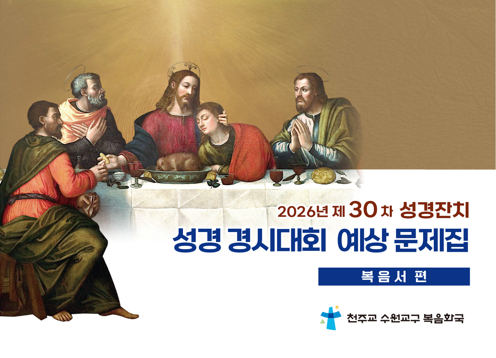

복음서 편 | 28일 완성
헬레나의 골든벨을 응원하며
"사람이 빵만으로 사는 것이 아니라 하느님의 입에서 나오는 모든 말씀으로 산다."
(마태 4,4)
말씀은 너희에게 가까이 있다.
너희 입과 너희 마음에 있다.
(로마 10,8)
주님,
성령의 빛으로 저희 눈을 여시어
주님의 길을 보게 하시고
저희 귀를 여시어
생명의 말씀을 듣게 하소서.
아멘.
당신 말씀은 제 발에 등불,
저의 길에 빛입니다.
(시편 119,105)
주님,
저희가 성경을 생명의 말씀으로
믿고 기도하며
살고 선포하게 하시어
언제나 성령 안에서
평화와 기쁨을 누리게 하소서.
아멘.